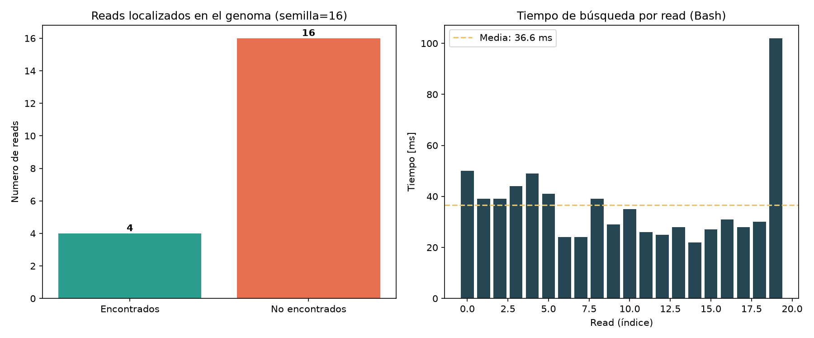

Adaptación del generaReporteTask del repositorio
tap_pipeline_gen, reescrito en Python.
A continuacion se resumen los resultados del calculoBashTask que fue adaptado.
| Metrica | Valor |
|---|---|
| Reads procesados | 20 |
| Encontrados en el genoma | 4 |
| No encontrados | 16 |
| Largo de semilla | 16 bases |
| Tiempo medio por búsqueda | 36.60 ms |
| Tiempo total | 732 ms |
